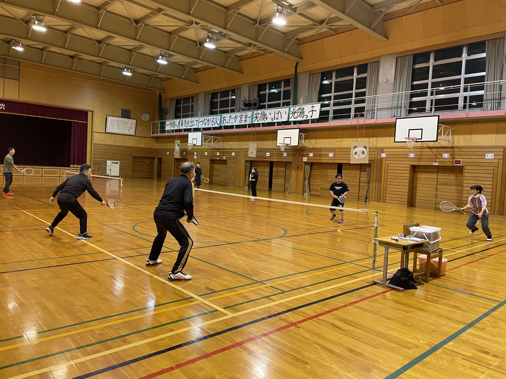
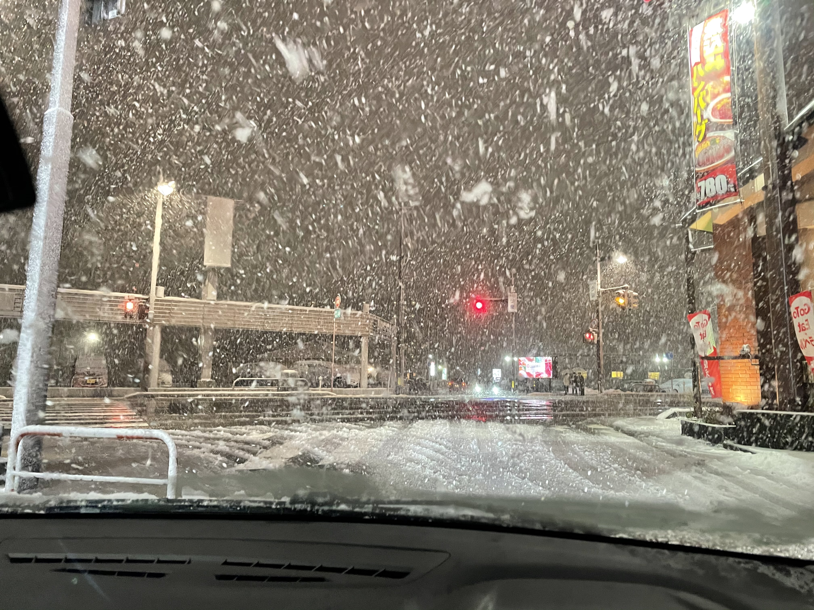
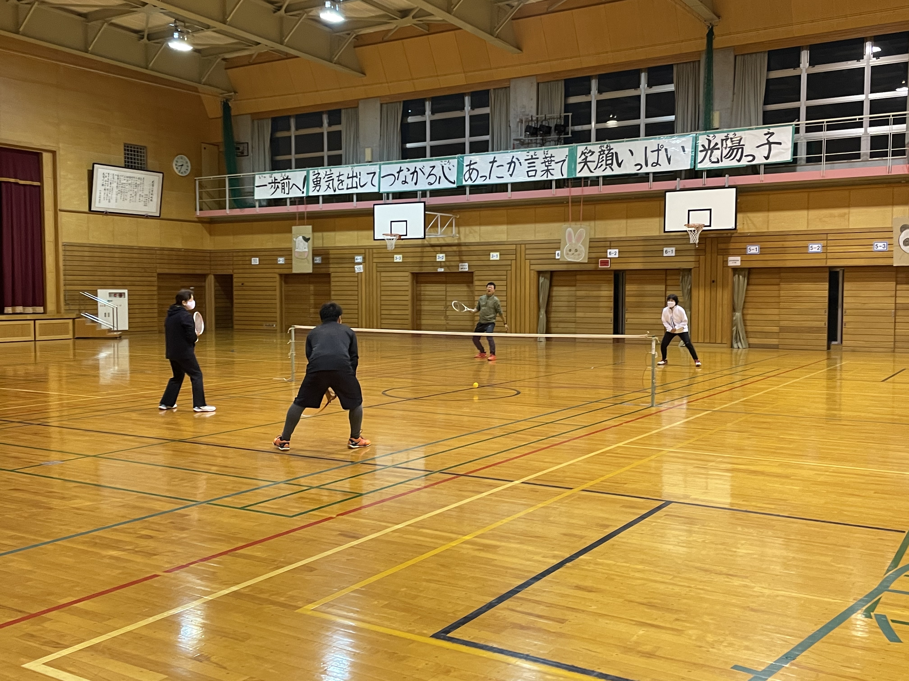

今日も寒かったのですが、外はずっと雪ではなく雨だったので、まだ今週の大雪の日よりはマシでした。それも参加者は15名。みんな好きだねえ。
この写真は実は12月15日のものでした。この日はブログを書かなかったのですが、もったいないので載っけちゃいました。

今日も寒かったのですが、外はずっと雪ではなく雨だったので、まだ今週の大雪の日よりはマシでした。それも参加者は15名。みんな好きだねえ。
この写真は実は12月15日のものでした。この日はブログを書かなかったのですが、もったいないので載っけちゃいました。


先日書いたガムゾーンからガムブーストへのガットの変更。もっと言えば、ガムゾーンテンション29ポンドからガムブーストテンション26ポンドの話。ただ実際は、ラケットが２本になったので、張り替えではなく、どっちも存在なんですけどね。
29ポンドで張ったガムゾーン：スピンをかけやすいガットなのに、スピンをかけにくくしてしまう結果に。さらにボールが飛ばない。
26ポンドで張ったガムブースト：ボールの飛びはいいけれど、ガムゾーンと比べるとスピンのエラーも少ないけれど、何か物足りない。ひっかかりがあんまりないかも。
この物足りなさ、ゲージがガムゾーン1.27mmに対してガムブーストは1.25mm。通常、ソフトテニスだとゲージが細い方がスピンがかかりやすいと言われていますが、フレッシュの場合は、それもガムコーティングしているガットの場合は、太い方がスピンがかかりやすい感じがしますね。
なので、今一番試してみたいのはガムゾーンを24ポンドで張ること。でも一カ月の間に、新品のラケットのガットを即ミクロパワーに張り替えた後、１回使っただけでガムブーストに張り替えたからなあ。あー、ここまで来るともう病気なのかもね。あははは、あははは。
見学・参加のご連絡は gamaken3@gmail.com までお気軽にどうぞ。担当は松本です。よろしくお願いします。
メールで問い合わせる →